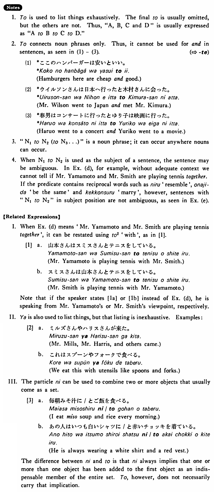

と (1) (B. 473)
- (ks).
- マイクとディック（と）は学生だ・です。
- Mike and Dick are students.
- (a).
- 私は英語と日本語を話す。
- I speak English and Japanese.
- (b).
- ミルズさんは来年ドイツとフランスとスペインへ行くつもりだ。
- Mr. Mills is planning to go to Germany, France and Spain next year.
- (c).
- ステーキはナイフとフォークで食べる。
- We eat steak with a knife and fork.
- (d).
- 山本さんとスミスさんがテニスをしている。
- Mr. Yamamoto and Mr. Smith are playing tennis.
- (e).
- 日本語とトルコ語は似ている。
- Japanese and Turkish are alike.
